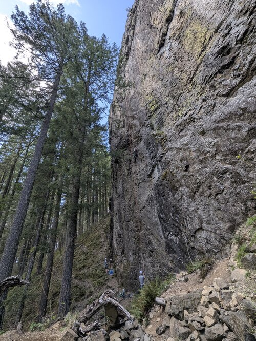
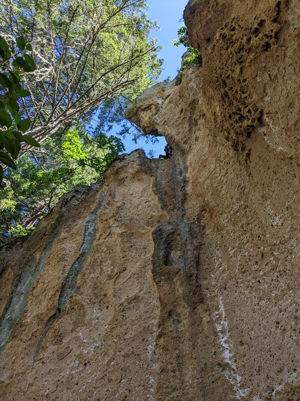
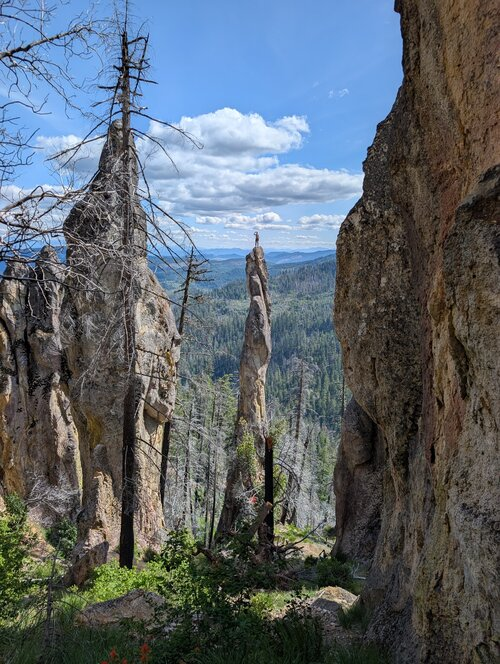

Top Rock Climbing Spots Around the PNW
These three spots are sure to peak your interest no matter your climbing style or preferences in adventure!

Eagles Rest
Easy-Expert
Eagles Rest is the best place to have some of everything. Its Overstory wall has some of the best beginner terrain, the Dream Wall has some outstanding and photogenic long routes, and the Bomb Shelter has some extremely difficult edge lines!

Lookout Point
Intermediate-Expert
Lookout Point may have a 1 mile uphill hike in, but it holds some of the best pocket climbing in the states. The copper streaks that turn the rock blue are amazing and the RIP wall boasts some of the steepest outdoor routes you can find.

Terranova
Intermediate-Advanced
Terranova may not have the hardest routes, but it may have some of the most adventurous. The Bill Newcomb tower gives 100 feet of extremely sketchy and crumbly climbing that is an absolute must try for everyone who is capable!